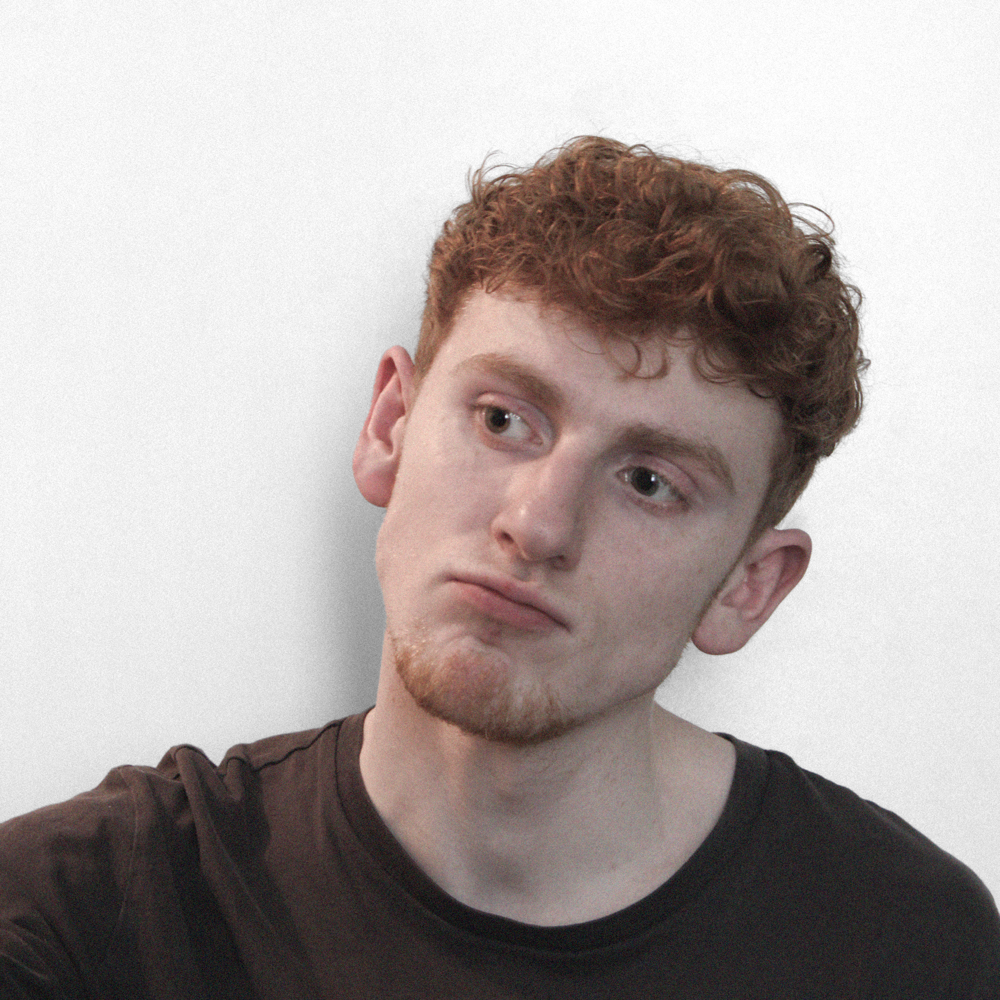

Ambitious UX/UI Designer.
Passionate of esthetics, who
shapes unconventional ideas
into unique experiences.
Knowledge about various
technologies allows him to
understand the project from
different perspectives.
Creative persona with
analytical mindset ready
to solve complex problems.
He designs, You experience.